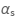
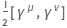
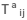
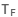
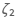
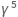
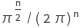

FeynCalc
FeynCalc is a Mathematica package for algebraic calculations in Quantum Field Theory and semi-automatic evaluation of Feynman Diagrams
Reference
Basic objects
Abbreviation — gives a shortname for name (in HoldForm)
AlphaStrong —  in QCD
AlphaFS — fine-strucutre constant
AntiQuarkField, QuarkField —name of a fermionic field
CA, CF —Casimir operator eigenvalues of SU(N)
ChiralityProjector — denotes or
DeltaFunction, DeltaFunctionPrime, DeltaFunctionDoublePrime — Dirac delta function and its derivatives
DiracGamma, DiracMatrix, DiracSlash, GA, GA5, GS, GAD, GSD, GAE, GSE — representation of Dirac matrices and slashes
DiracGammaT — tranpose of a Dirac matrix
DiracSigma — denotes 
DiracSpinor, Spinor, SpinorU, SpinorUBar, SpinorV, SpinorVBar — denotes spinors
Eps, LC, LCD, LeviCivita —totally antisymmetric epsilon (Levi-Civita) tensor
Epsilon — ϵ from dimensional regularization
ExplicitLorentzIndex, LorentzIndex — Lorentz index
ExplicitSUNIndex, SUNIndex —SU(N) adjoint index
ExplicitSUNFIndex, SUNFIndex —SU(N) fundamental index
FAD, FeynAmpDenominator — denominator of Feynman amplitudes
FCPartialD, LeftPartialD, LeftRightPartialD, LeftRightPartialD2, RightPartialD — partial derivatives acting on operators
FourVector, FV, FVD, FVE — representation of 4-vectors
GaugeField — name of a gauge field
GaugeXi — gauge parameter ξ
GluonField —name of a gluon field
Gstrong — QCD coupling constant
Li2 — dilog function
Li3 — trilog function
Momentum — internal representation of momenta
MetricTensor, MT, MTD, MTE — representation of the metric tensor
Nf — denotes the number of flavors
Pair — special pairing used in the internal representation to represent the metric, 4-vectors or scalar products
Polarization — internal representation of polarizations
PolarizationVector — polarization vector
PlusDistribution — a special distribution
PropagatorDenominator, PD — internal representation of propagator denominators
QuantumField — generic name of a quantum field
ScaleMu — μ scale in dimensional regularization
SD, SUNDelta — Kronecker delta for adjoint SU(N) indices
SDF, SUNFDelta — Kronecker delta for fundamental SU(N) indices
SmallDelta, SmallEpsilon — denotes some small positive numbers
SmallVariable — small variable to be used as a regulator in PaVe functions
SP, SPD, SPE — denotes scalar products of 4-momenta
SUND — structure constant in SU(N)
SUNF — structure constant in SU(N)
SUNN — in SU(N)
in SU(N)
SUNT, SUNTF ——of SU(N) in the fundamental representation
Tf — group constant —n SU(N)
Zeta2 — denotes 
Basic functions
Combine— alternative to Together
Complement1— alternative to Complement
Collect2, Collect3 — alternatives to Collect
DataType — defines data types
Expand2— alternative to Expand
Explicit — inserts explicit expressions for certain objects
Factor1, Factor2 — alternatives to Factor
FCAntiSymmetrize— antisymmetrizes with respect to the given variables
FCE, FeynCalcExternal —converts the expression to the external FeynCalc representation
FCF, FeynCalcForm — changes the printed output to an easy to read form.
FCI, FeynCalcInternal —converts the expression to the internal FeynCalc representation
FCSplit, PartitHead, SelectFree, SelectNotFree — alternative to Select
FCSymmetrize— symmetrizes with respect to the given variables
FRH — alternative to ReleaseHold
Isolate — replaces expressions by abbreviations
MemSet — memoization depending on the amount of free RAM
NTerms — alternative to Length
NumericalFactor — gives overall numerical factor
NumericQ1 — alternative to NumericQ
PowerFactor, PowerSimplify —simplification of expressions with exponents
Series2, Series3 — alternatives to Series
Solve2, Solve3 — alternatives to Solve
SumP, SumS, SumT — different summations
Lorentz tensors
Amputate — amputates 4-vectors, Dirac matrices or Levi-Civita tensors
ChangeDimension — changes dimension of Lorentz indices and momenta
CompleteSquare — completes the square of a second order polynomial in the momentum x
Contract — contracts Lorentz indices of tensors and Dirac matrices
EpsEvaluate — applies total antisymmetry and linearity to all Levi-Civita tensors
ExpandScalarProduct — expands scalar products of sums of momenta
FCClearScalarProducts — removes all user-specific specific definitions of scalar products
FCRenameDummyIndices — renames dummy Lorentz and SU(N) indices
FourDivergence — calculates partial derivative with respect to a 4-vector
FourLaplacian — calculates the Laplacian
MomentumCombine, MomentumCombine2 — inverse operations to MomentumExpand and ExpandScalarProduct
MomentumExpand — expands Momentum[a+b+ ...]
PairContract, PairContract2, PairContract3 — like Pair but with local contraction properties
ScalarProduct — defines scalar products of 4-vectors
SetMandelstam — defines the Mandelstam variables
TensorFunction — defines an unspecified Lorentz tensor
TrickMandelstam — simplifies the expression by eliminating one of the Mandelstam variables
Uncontract — uncontracts Lorentz indices of tensors and Dirac matrices
Dirac algebra
Anti5 — anticommutes all  matrices to the left or to the right
Chisholm — substitutes products of 3 Dirac matrices by the Chisholm identity
DiracEquation — applies the Dirac equation
DiracGammaCombine — inverse operation to DiracGammaExpand
DiracGammaExpand — expands sums of momenta contracted with Dirac matrices
DiracOrder — orders the Dirac matrices in expression alphabetically
DiracReduce — reduces all 4-dimensional Dirac matrices to the standard basis (SPVAT-decomposition)
DiracSigmaExplicit — inserts the explicit definition of DiracSigma
DiracSimplify — simplifies products of Dirac matrices and expands non-commutative products
DiracTrace — computes traces of Dirac matrices
DiracTrick — contracts Dirac matrices with each other and performs several simplifications but no expansions
EpsChisholm — substitutes Chisholm identity for a Dirac matrix contracted with a Levi-Civita tensor
Schouten — applies Schouten identity
ToLarin — substitutes according to the Larin scheme
Algebra of non-commutative objects
AntiCommutator — defines an anti-commutator
Calc, Trick — multiple simplifications for Dirac and SU(N) algebra
Commutator — defines a commutator
CommutatorExplicit — substitutes explicit definitions of Commutator and AntiCommutator
DeclareNonCommutative —declares non-commutative objects
DotExpand — expands Dot products
DotSimplify — expands and reorders noncommutative terms
NonCommFreeQ, NonCommQ — checks if the expression contains non-commutative quantities
TR, Tr2 — calculates Dirac and possibly also SU(N) traces
UnDeclareNonCommutative — undeclares non-commutative objects
SU(N) algebra
CalcColorFactor — calculates the color factor
SUNDeltaContract — contracts Kronecker deltas with adjoint color indices
SUNFDeltaContract — contracts Kronecker deltas with fundamental color indices
SUNSimplify, SUNFSimplify —simplifies expressions that contain SU(N) matrices
SUNTrace — computes traces over SU(N) matrices
Loop integrals
A0 — Passarino-Veltman 1-point integral (tadpole)
Apart2 — partial fractions loop integrals (only very simple cases)
ApartFF — partial fractions arbitrary loop integrals
B0, B00, B1, B11 — Passarino-Veltman 2-point integrals (bubbles)
C0 — Passarino-Veltman 3-point integrals (triangles)
D0 — Passarino-Veltman 4-point integrals (boxes)
DB0 — derivative of B0 with respect to the external momentum
DB1 — derivative of B1 with respect to the external momentum
FCApart — backend of ApartFF, works only on single loop integrals
FCIntegral — head of loop integrals
FCLoopBasisIncompleteQ — checks if the propagators of a loop integral do not form a basis
FCLoopBasisOverdeterminedQ — checks if the propagators of a loop integral are linearly dependent
FCLoopBasisFindCompletion — determines propagators that need to be included in the loop integral to ensure that its propagators form a basis
FCLoopCanonicalize — auxiliary function that canonicalizes free Lorentz indices of 1-loop integrals
FCLoopExtract — extracts loop integrals
FCLoopIsolate — wraps loop integrals into specified heads
FCLoopSolutionList — auxiliary function that processes the output of FCLoopCanonicalize
FCLoopSplit — splits the expressions into pieces that contain different types of loop integrals
FCMultiLoopTID — tensor reduction of multi-loop integrals (only for non-zero Gram determinants)
FeynAmpDenominatorCombine — combines products of propagators
FeynAmpDenominatorSimplify — simplifies loop integrals by doing shifts and detects integrals that vanish by symmetry.
FeynAmpDenominatorSplit — splits all FeynAmpDenominator's into products of single propagators
FeynmanParametrize — introduces Feynman parametrization for some 1-loop integrals
FromTFI — ranslates TFI, TVI and TJI Tarcer-notation to FeynCalc notation
GammaExpand — rewrites Gamma
[n + m] where n is an integer
GenPaVe, PaVe — denote invariant Passarino-Veltman integrals
Hill — gives the Hill identity
HypergeometricAC — analytically continues Hypergeometric2F1 functions
HypergeometricIR — substitutes a particular integral represenetation for all Hypergeometric2F1[a,b,c,d]
HypExplicit — expresses —
HypInt — substitutes Hypergeometric2F1 functions by their integral definition
IFPDOff — changes from IFPD representation to FeynAmpDenominator
IFPDOn — changes from FeynAmpDenominator representation to IFPD
IntegrateByParts, PartialIntegrate — integration by parts for particular Feynman parameter integrals
OneLoop — calculates 1-loop Feynman diagram amplitudes
OneLoopSimplify — simplifies 1-loop Feynman diagram amplitudes
ToHypergeometric — introduces Hypergeometric2F1
PaveOrder — orders the arguments of D0 in a standard way
PaVeReduce — reduces Passarino-Veltman integrals down to A0, B0, C0 and D0
PropagatorDenominatorExplicit — rewrites FeynAmpDenominator in terms of scalar products and masses
RussianTrick — derives IBP relations for 2-loop self-energy integrals
ScalarProductCancel — cancels scalar products with propagators
SimplifyDeltaFunction — applies some simplifications to DeltaFunction
Sn — denotes 
Tdec — calculates tensor decomposition formulas for loop integrals
TFIOrder — orders the arguments of some TFI functions in a standard way
TID — does a 1-loop tensor integral decomposition
TIDL — library of tensor integral decomposition formulas
ToDistribution — introduces DeltaFunction, DeltaFunctionPrime and PlusDistribution
ToFI, ToTFI — converts 1- and 2-loop scalar self-energy integrals to the Tarcer notation
ToPaVe — converts scalar 1-loop integrals to Passarino Veltman scalar functions
TrickIntegrate — integration of some special distributions
UVPart — discards UV-finite integrals
Export and import
FeynCalc2FORM — displays expression in FORM syntax
FeynCalcToLaTeX — generates LaTeX
FORM2FeynCalc — translates teh FORM expression in file into FeynCalc notation
StringChomp — chops initial and final white space of a string
Write2 — writes the given settings in sequence followed by a newline to the specified output file
Feynman rules and amplitudes
BackgroundGluonVertex — 3-gluon vertex in the background field gauge
ChargeConjugationMatrix — charge conjugation matrix
ChargeConjugationMatrixInv — inverse of ChargeConjugationMatrix
ComplexConjugate — complex conjugates Feynman amplitudes
CovariantD — generic covariant derivative
CovariantFieldDerivative — covariant field derivative
DoPolarizationSums — sums over physical polarizations of external massless vector bosons
ExpandPartialD — expands DOT products of QuantumField's using the Leibniz rule
ExplicitPartialD — inserts the definition for LeftRightPartialDand LeftRightPartialD2
FAPatch — patches FeynArts to be compatible with FeynCalc
FCFAConvert — converts a FeynArts amplitude to FeynCalc
FCPrepareFAAmp — auxiliary function for a partial conversion of a FeynArts amplitude to FeynCalc.
FermionSpinSum — constructs Dirac traces out of squared ampliudes with external Dirac fermions.
FeynRule — determines Feynman rules from Lagrangians
FieldDerivative — field derivative
FieldStrength — field strength tensor
FunctionalD —functional derivative
GhostPropagator — ghost propagator
GluonGhostVertex — gluon ghost vertex
GluonPropagator — gluon propagator
GluonSelfEnergy — 1-loop gluon self-energy
GluonVertex — 3- and 4-gluon vertices
PolarizationSum — sums over polarizations of vector bosons
QCDFeynmanRuleConvention — sign convention for QCD Feynman rules
QuarkGluonVertex — quark gluon vertex
QuarkPropagator — quark propagator
ScalarGluonVertex — scalar-scalar-gluon vertex
SMP — substitutes symbols for various SM paremeters
SMVertex — some SM vertices
Tables
Amplitude — database of Feynman amplitudes
AnomalousDimension — non-singlet one-loop contribution to the anomalous dimension in the scheme
CheckDB — saves or retrieves expressions from the database
Convolute, ConvoluteTable — convolution of functions
CounterTerm — database of counter terms.
Gamma1, Gamma2, Gamma3, GammaEpsilon — special products and expansions of Gamma functions
Integrate2, Integrate3, Integrate4, Integrate5 — some integrals
InverseMellin — inverse Mellin transform for some polynomials
Kummer — applies Kummer relations
Lagrangian — database of Lagrangians
Nielsen — denotes Nielsen's polylogarithm
SimplifyPolyLog — several simplifications for Log and PolyLog functions under certain assumptions
SplittingFunction — database of splitting functiosn